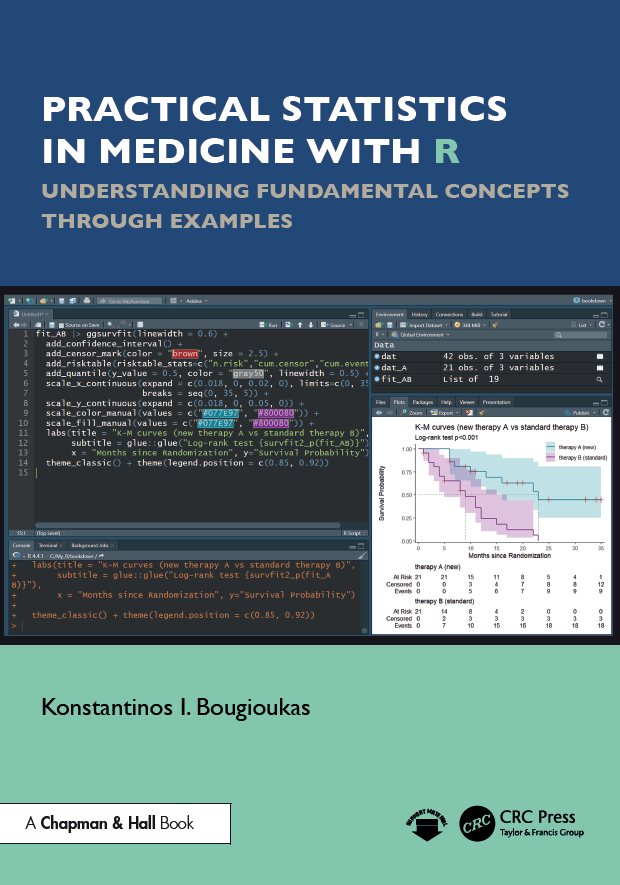

Practical Statistics in Medicine with R
Understanding Fundamental Concepts through Examples
Konstantinos I. Bougioukas, PhD ![]()
Welcome!

Welcome to the online version of the 1st edition of “Practical Statistics in Medicine with R: Understanding Fundamental Concepts through Examples”. Whether you’re new to statistical analysis or looking to enhance your analytical skills with the R programming language, this introductory textbook provides comprehensive and practical guidance for understanding fundamental statistical concepts through healthcare examples in R.
This is a work-in-progress draft. Chapters will be released online progressively.
If you would like a physical copy or an eBook of the textbook, it is available for order through CRC Press / Taylor & Francis Group (www.routledge.com/9781032600581). Also available at Amazon.
License
This website is and will always be free, licensed under the Creative Commons Attribution-NonCommercial-NoDerivs 4.0 License. .